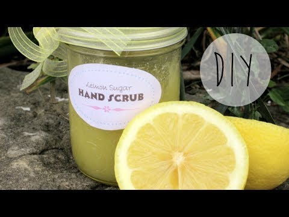

Unit 3 Project
 Every one should take care of their nails. Your nails are the first thing people see
when you shake their hand, its something that represents you. Most girl wants to have
pretty nails without all the damage that is caused when painting your nails. Here are ways
to help you take care of your nails and hands.
Every one should take care of their nails. Your nails are the first thing people see
when you shake their hand, its something that represents you. Most girl wants to have
pretty nails without all the damage that is caused when painting your nails. Here are ways
to help you take care of your nails and hands.
 If you are planning to paint your nails, you should always start with a base coat and finish
it a clear coat. A base coat will prevent your nails from becoming yellow. A Top coat will
protect your design and add shine.You should always try to use both of these coats when doing your nails.
If you are planning to paint your nails, you should always start with a base coat and finish
it a clear coat. A base coat will prevent your nails from becoming yellow. A Top coat will
protect your design and add shine.You should always try to use both of these coats when doing your nails.

Taking care of your hands is just as important as as taking care of your nails. There many
things that help you make your hand soft and smooth but if you don't want to buy something
expensive you can always make your a D.I.Y hand scrub.
How to make D.I.Y Handscrub
next